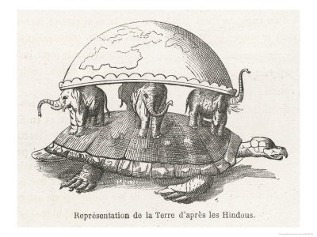

Объе́ктно-ориенти́рованное программи́рование (ООП) — методология программирования, основанная на представлении программы в виде совокупности объектов, каждый из которых является экземпляром определенного класса, а классы образуют иерархию наследования.